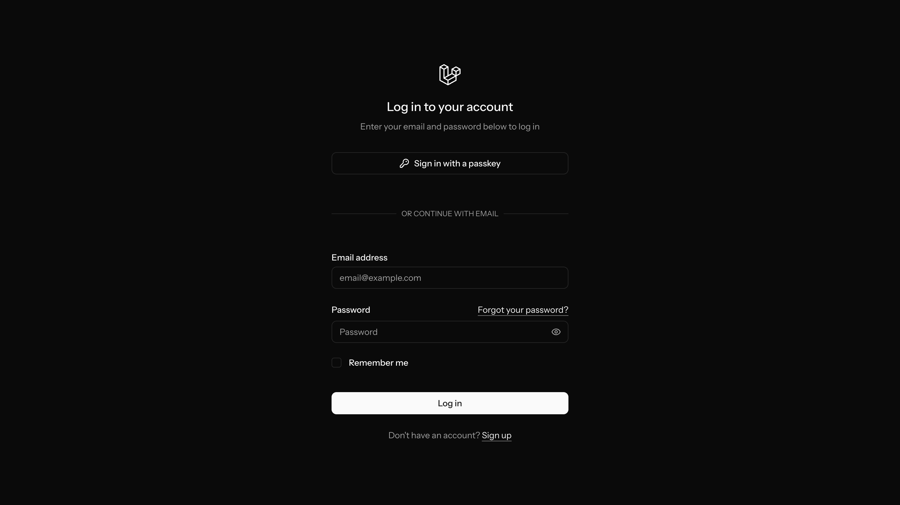

Start / End Proses UI Proses sistem Keputusan Input / Output
1. Master flowchart — perjalanan HR
Alur utama dari login sampai shortlist kandidat.
Penjelasan alur
Login — HR masuk ke aplikasi (demo: hr@aira.test).
Dashboard — melihat jumlah CV, lowongan aktif, aktivitas chat.
Tiga pintu kerja: unggah CV/lowongan, chatbot matching, atau browse bank kandidat.
Matching & analisis — sistem ranking + komparasi/skill gap.
Preview CV — tinjau dokumen, lalu Shortlist.
2. Flowchart chatbot & intent
Setiap pesan HR diarahkan ke intent, lalu ke service yang sesuai.
Intent
Contoh input HR
Service
Output UI
search
“IT Python SQL min 3 tahun”
ResumeMatcher
Kartu rekomendasi + panel skor
compare
“Bandingkan peringkat 1 dan 2”
CandidateAnalyzer
Tabel komparasi siapa unggul
skill_gap
“skill gap #1” / ID kandidat
CandidateAnalyzer
Sudah ada vs Belum ada
summarize
“ringkas kandidat ini”
CandidateAnalyzer
Ringkasan kualifikasi
explain
“kenapa #1 cocok?”
Analyzer / local
Alasan ranking
chitchat
“halo”, “terima kasih”
Local (+ Gemini)
Balasan ringan
3. Flowchart matching pipeline
Detail proses search dari query sampai ranking.
Query HRteks + optional job lock
→
Parse kriteriaskill · kategori · years
→
Scan korpusCandidate.raw_text
↓
Score skill praktikbukan teach-only
→
Boost kategoriIT / HR / dll
→
Gate pengalamanmin. N tahun
↓
Gemini?timeout 8s
→
Enrich jawabanatau fallback lokal
→
Rank top-Nkartu + panel kanan
Aturan kualitas ranking: pengalaman praktik diutamakan dibanding CV “instructor/mengajar saja”.
Kategori yang cocok mendapat skor tambahan. Gemini tidak boleh menggantung chat — bila 503/timeout, balasan lokal tetap dikirim.
Contoh happy path
HR: “Saya butuh kandidat IT yang kuat di Python dan SQL, minimal 3 tahun”
Intent = search → ResumeMatcher
Hasil: 10 kandidat, 5 ditampilkan di chat, sisanya di panel
HR klik “Bandingkan 1 vs 2” → intent compare
HR klik Preview CV → sheet PDF/teks → Shortlist
4. Fitur Auth
Apa fungsinya?
Login email/password atau passkey
Register akun baru
Forgot password & session logout
Guest di / dialihkan ke login
Flow singkat
Guest
→
Login / Register
→
Session Fortify
→
Dashboard

Login — /login · email, password, passkey, remember me